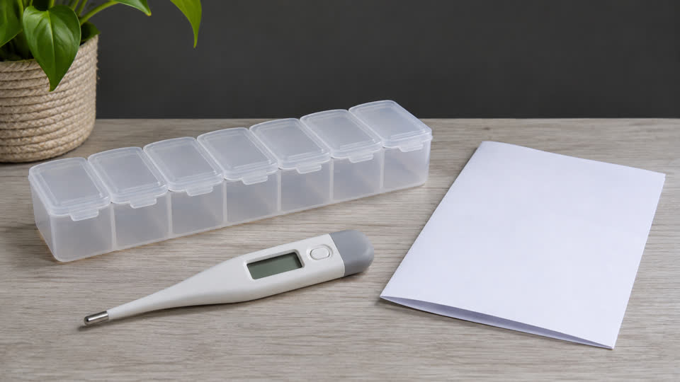

The 5 steps of the safe path
Do them in order. Each step fits into a weekend. The details and checklists are in the kit (how to use it ê¢â â).

ê°Å¸Â 1. Home: a 72-hour kit, then 14 days
This is what Civil Defense (Brazil) recommends (and the European Union has too, since 2025): 2 liters of water per person per day, nonperishable food, medicine, a flashlight and battery-powered radio, a portable charger, documents in a waterproof bag, and contacts on paper. A family of 4 needs 24 liters of water for 3 days. In the first 72 hours, no one cooks: the food is ready to eat. After that, gradually build up to 14 daysê¢â¬â¢ worth, with a way to cook without power, and review every 6 months. Eating and cooking without power ê¢â â

ê°Å¸â´ 2. Donê¢â¬â¢t rely only on online access
If Pix, your banking app, or the internet stops working, how will you buy food? Keep enough cash for a few days of expenses (donê¢â¬â¢t withdraw your bank savings), contacts, prescriptions, and documents on paper, a map and information saved offline, and 14 days of food already at home. Charged cell phone, AM/FM radio, and never let the gas tank run low: communication and travel ê¢â â ê· Library without internet: 3 options ê¢â â
ê°Å¸â 3. Digital protection
Your data may already have been leaked. Be wary of anyone who knows your name and CPF and asks for personal information, a password, or Pix. Turn on two-step verification (an extra code in addition to your password): for email, use an authenticator app (such as Google Authenticator or Microsoft Authenticator) instead of SMS; for WhatsApp, use ê¢â¬Åtwo-step verificationê¢â¬Â with a 6-digit PIN; for your bank, use the token in its own app. Use a different password for each account. Also check Registrato (a free Central Bank website) for accounts and Pix keys opened under your CPF.

ê¢Â¤ê¯Â¸Â 4. Health and people
Keep a 14-day supply of prescription medicine and store the prescription. Make a family plan: a meeting place, who picks up the children, a relative outside town everyone can contact, and how to reach each other without internet. Trusted neighbors. And Civil Defense (Brazil) alerts on your phone: text your ZIP code to 40199.
ê°Å¸âºê¯Â¸Â Different regions, different risks
The kit includes checklists for floods and landslides, severe winds and tornadoes, heat and fires, long blackouts, digital scams, and supply shortages. Choose the ones for your city, and the plan will include only what matters to you.